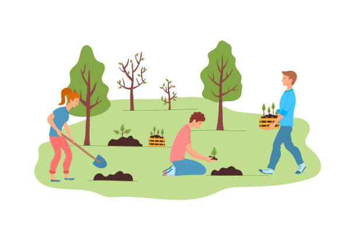

Tlaxcala

Nuestro estado se encuentra con grandes problemas de deforestacion debdido a tala ilegal,plagas e incendios foestales, debido a esto Tlaxcala a perdido entre 400 mil y 450 mil litros diarios de oxigeno ya que han sido deforestadas 250 mil hectareas deforestadas, sin embargo esto no es algo a lo que le den mucha importancia muchos ciudadanos,por ello este proyecto planea impulsar la reforestacion en los bosque de tlaxcala, sobre todo en nuestro paque nacional La malinche, ya que en los ultimos meses ha tenido demasiados incendios forestales y al parecer no es algo que les preocupe a las autoridades ya que no han hecho nada por intentar recuperar un poco de la perdida de estos, sin embargo nosotros podemos hacer un cambio.
Objetivos y beneficios de la reforestacion